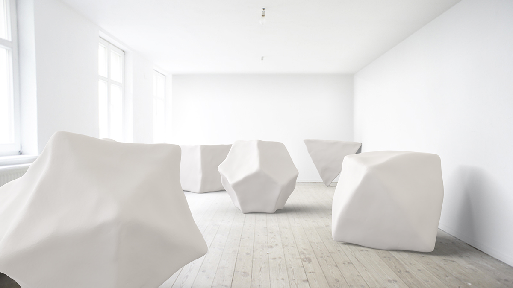

3D-Grafik – Illustration & Animation
3D-Charaktere und ‑Szenen

Elli Kuruş

Platonische Körper, entstanden im Rahmen des Künstlerkollektivs Elli Kuruş. Hierfür wurden die handgeformten Platonischen Körper mit dem 3D-Scanner erfasst und die Daten anschließend in Blender bearbeitet und animiert.


platonic bodies
Virtuelle Installation, 2015, Galerie ARTACKER, Berlin in Zusammenarbeit mit Elli Kuruş.
Ein künstlerisches Spiel mit den Realitäten: von handgeformten Plastilin-Körpern, über deren Digitalisierung und Animation im WWW, hin zu ihrer virtuellen Installation im Kunstraum.


GRASSI Museum
Gestaltungsentwurf für das Foyer des GRASSI Museums für Angewandte Kunst anlässlich eines offenen Wettbewerbs im Frühjahr 2014. Im Fokus der Ausschreibung stand die Gestaltung des Foyers insbesondere für Kinder und Familien. Gesucht wurden Gestaltungskonzepte, die der Einstimmung auf den Museumsbesuch dienen, den Eingangsbereich inhaltlich mit der Ausstellung vernetzen und Neugier wecken.
Imagefilm für das Ausstellungskonzept „GRASSI für Kinder“
Unionsverlag
Rund um die Welt in 40 Jahren – Ausstellungsplanung und ‑gestaltung für den Unionsverlag im Foyer des Haus des Buches, Leipzig.
Die Ausstellung im Haus des Buches leuchtet hinter die Kulissen eines Verlages, der seit 40 Jahren Autoren aller Kontinente beheimatet und von Anfang an die üblichen Grenzen überschritt. Dokumente, Fotos und Hintergründe der Buchherstellung zeigen die Verlagsarbeit im Wandel der Jahrzehnte.
Grundlegende Voraussetzungen

- Eckdaten
- Haus des Buches Leipzig, 180qm Ausstellungsfläche im Foyer, öffentlich zugänglich, angegliederter Cafébetrieb
- Ausstellungsdauer: März/April 2015; Öffnungszeiten: Mo.–Do. 9–17 Uhr, Freitag 9–15 Uhr


vorhandenes Ausstellungsmobiliar, Hängemöglichkeiten und -bedingungen: Glasvitrinen und Stellwände, Haken und Aufhängungen, Rahmen divers, Hängemöglichkeiten an den Querschienen der Deckenverstrebung
Der Zugang zum Behindertenaufzug und die Türen zum Innenhof müssen frei zugänglich bleiben. Die Säulen sollten möglichst nicht involviert werden.
Planungsphase 1 – Texttafeln und Vitrinen


Planungsphase 2 – Entwurf, Gestaltung und Positionierung weiterer Ausstellungselemente


Planungsphase 3 – Anpassung der Ausstellungselemente an inhaltliche Veränderungen und technische Voraussetzungen


Realisierung